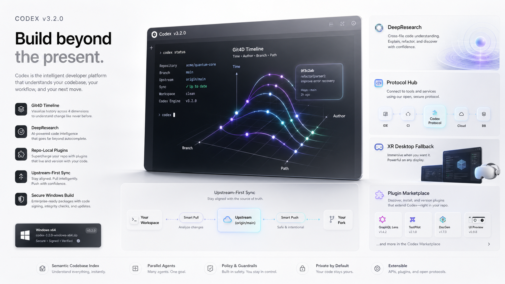

4D repo sessions on app-server protocol
Git4D uses git4d/session/* methods, buffered replay, and deterministic desktop fallback.

Upstream-first fork release
Official Codex through rust-v0.133.0, with Git4D, DeepResearch, repo-local plugins, and Windows release automation on the official API path.
Git4D uses git4d/session/* methods, buffered replay, and deterministic desktop fallback.
DeepResearch stays layered on official Codex surfaces instead of replacing the product shell.
Bundled zapabob plugins remain discoverable while upstream plugin protocol changes are preserved.
Release channels
main / v3.2.0release/3.2.0-stable / v3.2.0-stable.0codex-v3.2.0-windows-x86_64.tar.gzE2508EC70DC888A0DA4AC1813124F7F9C3D5F65FF6F73067CFBFF5630207FF59Release proof
The shipped executable reports codex-cli 3.2.0. The release path used six build jobs,
isolated H: target and temp directories, Bazel lock refresh, focused app-server protocol tests,
and a tar.gz asset with merge evidence.
cargo test -p codex-app-server-protocol git4dcargo test -p codex-app-server git4dcargo check -p codex-core -j 6cargo check -p codex-app-server -j 6cargo check -p codex-tui -j 6cargo build --release -p codex-cli -j 6